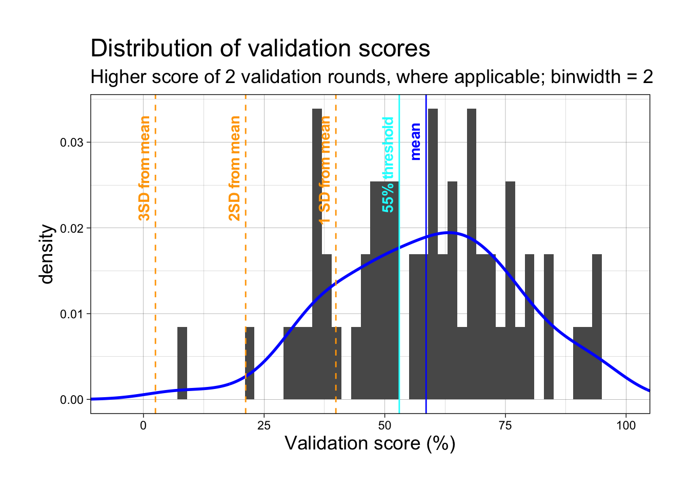
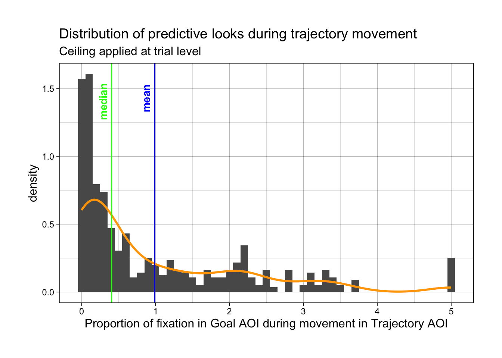
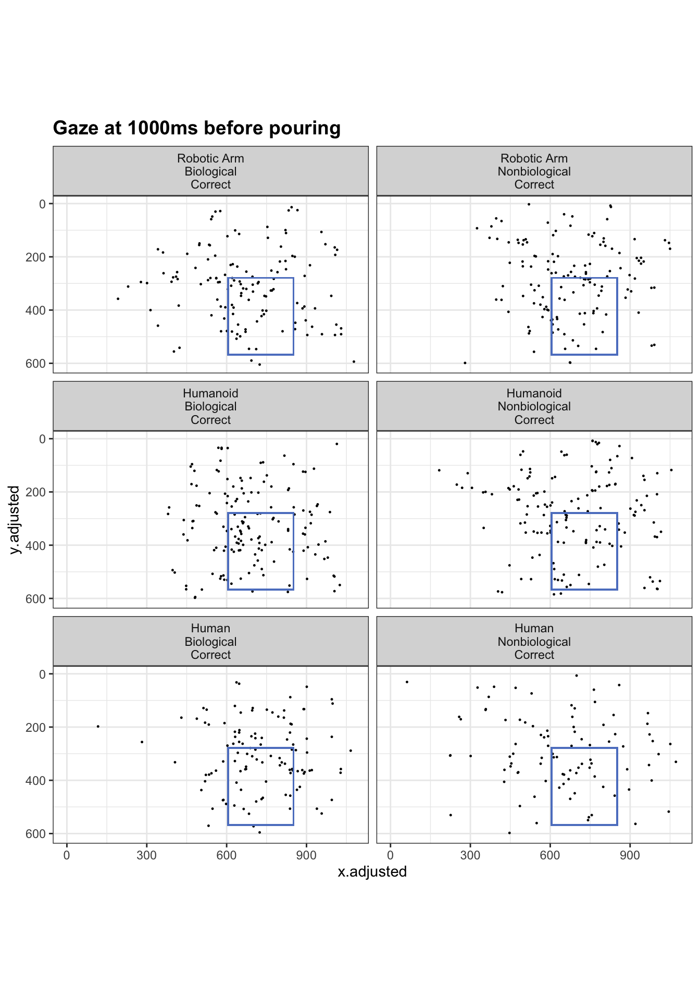
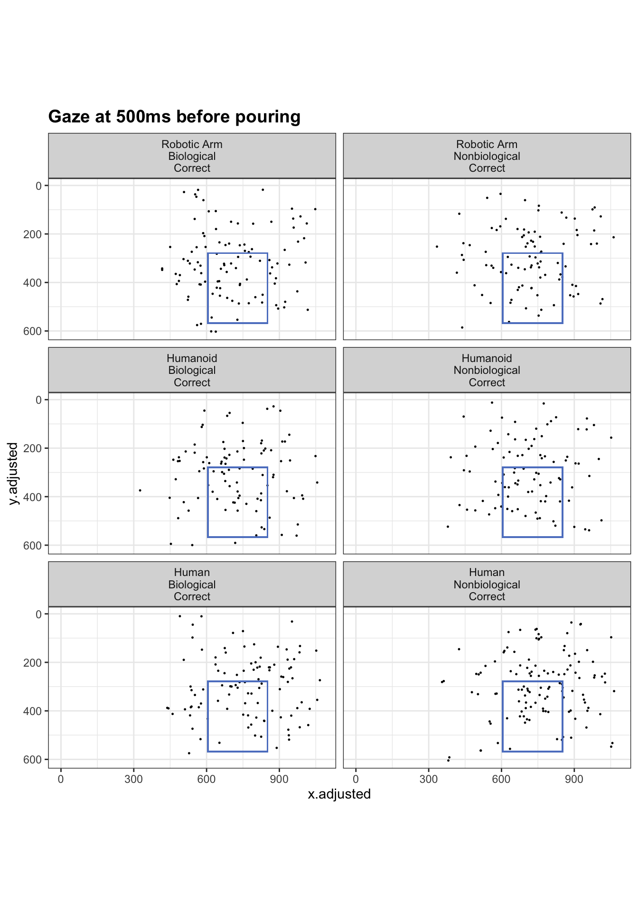
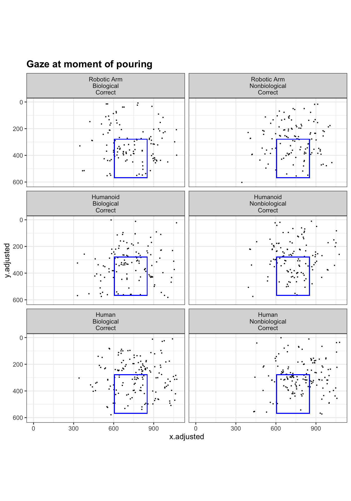

library(tidyverse) library(stringr) library(geomtextpath) # for annotating geom_vlineslibrary(mosaic, include.only ='favstats')library(knitr, include.only='kable')library(eyetrackingR) # add_aoi, need equal time windowslibrary(gganimate) # install packages png and gifski to make this worklist_of_files_with_ID <-list.files(path ="data_5/",recursive =TRUE,pattern ="\\.csv$",full.names =TRUE)# writeLines(list_of_files, "filenames.txt")df <- list_of_files_with_ID %>%setNames(nm = .) %>%map_df(~read_csv(file = .x, col_types =cols()), .id ="participant") %>%mutate(participant =str_extract(participant, "V\\d{3}") )# above did not work with baseR pipe |>, had to use the tidy pipe
Examine validation scores
Validation scores are calculated percent_in_roi column.
The preregistered exclusion method is 55% validation accuracy within 2 rounds (gaze falls within 200px radius of 5 validation points).
Code
# column percent_in_roi has brackets [], function to removeremove_brackets <-function(col) {gsub("\\[|\\]", "", col)}# percent_in_roi originally is a string, e.g., "[100, 100, 100, 100, 100]"# remove brackets, str_split into list of 5 strings, e.g., c("100", "100", "100", "100", "100")df_percent_in_roi <- df |>group_by(participant) |>select(participant, percent_in_roi) |>drop_na() |>mutate(percent_in_roi =remove_brackets(percent_in_roi)) |>mutate(list_percent =str_split(percent_in_roi, ","))# split the list of string into 5 columns, for each column, as.numeric()df_calculate_mean <- df_percent_in_roi |>select(participant, list_percent) |>unnest_wider(list_percent, names_sep =".") |>mutate_at(c('list_percent.1', 'list_percent.2', 'list_percent.3', 'list_percent.4', 'list_percent.5'), as.numeric) |># calculate means for each row, i.e., each round of validation# create boolean column to indicate whether participants passed 55% threshold or notmutate(mean_col =rowMeans(cbind(list_percent.1, list_percent.2, list_percent.3, list_percent.4, list_percent.5), na.rm=F)) |>mutate(boolean =case_when(mean_col >=55.0~TRUE, mean_col <55~FALSE))rmarkdown::paged_table(head(df_calculate_mean, n=10))
Get higher validation score for participants, if 2 rounds of validation
Code
# generate participant list who reach 55% within 2 rounds of validation# retain rows with higher validation percent in mean_col, using top_n()participant_list_eye_tracking <- df_calculate_mean |>group_by(participant) |>top_n(1, mean_col)rmarkdown::paged_table(head(participant_list_eye_tracking))
Quick calculation: what if we were to use “validation score above 80% on any of 5 points”
# A tibble: 2 × 2
# Groups: above_80 [2]
above_80 n
<lgl> <int>
1 FALSE 8
2 TRUE 51
FALSE 8
TRUE 51
Conclusion: If we use the approach of 80% score on any validation point, then we would only exclude 8 participants.
Subset for participants who passed the threshold
narrow_participant_list_eye_tracking is the list of participants whose data we will use for eye-tracking analysis.
Code
# subset data of participants who passed the validation score thresholdnarrow_participant_list_eye_tracking <- participant_list_eye_tracking |>filter(boolean ==TRUE)rmarkdown::paged_table(head(narrow_participant_list_eye_tracking))
Descriptive statistics of all participants
Code
# descriptive stats on mean_col of ALL participantsdescriptive_stats_mean_validation_scores <-favstats(~mean_col, data = participant_list_eye_tracking)knitr::kable(descriptive_stats_mean_validation_scores, align ="c", caption ="Descriptive statistics, validation scores of all participants")
Descriptive statistics, validation scores of all participants
min
Q1
median
Q3
max
mean
sd
n
missing
7.567568
46.69732
60.27027
70.78609
94.59459
58.55738
18.69207
59
0
Histogram and density curve of all participants
Code
ggplot(participant_list_eye_tracking, aes(x=mean_col)) +#set histogram and density plotgeom_histogram(aes(y =after_stat(density)), binwidth =2) +geom_density(color="blue", linewidth =1) +#set themetheme_linedraw() +theme(plot.margin =margin(1,1,1,1, "cm"), plot.title =element_text(size=18), plot.subtitle =element_text(size=14), axis.title =element_text(size =14) ) +# add vlines to indicate mean, SD from mean, and where the 55% threshold is# using geomtextpath::geom_textvline which combines vline and annotation settings# meangeom_textvline(label ="mean", xintercept =mean(participant_list_eye_tracking$mean_col), color ="blue", vjust =-.5, hjust = .9, fontface ="bold") +geom_textvline(label ="3SD from mean", xintercept = (mean(participant_list_eye_tracking$mean_col) -sd(participant_list_eye_tracking$mean_col)*3), color ="orange", vjust =-.5, linetype="dashed", hjust = .9, fontface ="bold") +geom_textvline(label ="2SD from mean", xintercept=(mean(participant_list_eye_tracking$mean_col) -sd(participant_list_eye_tracking$mean_col)*2), color ="orange", vjust =-.5, linetype="dashed", hjust = .9, fontface ="bold") +geom_textvline(label ="1 SD from mean", xintercept=(mean(participant_list_eye_tracking$mean_col) -sd(participant_list_eye_tracking$mean_col)), color ="orange", vjust =-.5, linetype="dashed", hjust = .9, fontface ="bold") +#55% thresholdgeom_textvline(label ="55% threshold", xintercept =53, color ="cyan", vjust =-.5, hjust = .9, fontface ="bold") +# set plot titlesggtitle("Distribution of validation scores", subtitle ="Higher score of 2 validation rounds, where applicable; binwidth = 2") +# set axis labelsscale_x_continuous(name ="Validation score (%)", limits=c(-11, 105), expand =c(0, 0))

Box and whisker plot, validation scores of all participants
#table for each validation point, mean, sd of validation scoresm1 <-favstats(narrow_participant_list_eye_tracking$list_percent.1) |>mutate(point ="[25, 25]", .before = min)m2 <-favstats(narrow_participant_list_eye_tracking$list_percent.2) |>mutate(point ="[75, 25]", .before = min)m3 <-favstats(narrow_participant_list_eye_tracking$list_percent.3) |>mutate(point ="[50, 50]", .before = min)m4 <-favstats(narrow_participant_list_eye_tracking$list_percent.4) |>mutate(point ="[25,75]", .before = min)m5 <-favstats(narrow_participant_list_eye_tracking$list_percent.5) |>mutate(point ="[75, 75]", .before = min)#descriptive stats for each validation pointeach_validation_point <-rbind(m1, m2, m3, m4, m5) rownames(each_validation_point) <-NULL#turn off automatically assigned row namesknitr::kable(each_validation_point, align="c", caption ="**Participants who passed the 55% threshold, validation scores on each data point**")
Participants who passed the 55% threshold, validation scores on each data point
point
min
Q1
median
Q3
max
mean
sd
n
missing
[25, 25]
0
83.73373
96.49123
100.00000
100
85.66602
23.51577
35
0
[75, 25]
0
56.25000
80.55556
97.63014
100
69.22791
31.41036
35
0
[50, 50]
50
83.16013
92.98246
100.00000
100
88.29258
13.91080
35
0
[25,75]
0
14.86486
74.32432
91.70472
100
55.26239
39.95933
35
0
[75, 75]
0
15.26775
67.56757
89.18919
100
56.78598
38.30616
35
0
Reaction time data
Cleanup
Code
remove_brackets <-function(col) {gsub("\\[|\\]", "", col)}# load data on the frame just before liquid appears, in millisecondsframe_before_outcome <-read_csv("ReactionTime_FrameBeforeOutcome.csv")df_reaction_time <- df |>select(participant, trial_index, rt, stimulus, response) |>drop_na()reactionTime <- df_reaction_time |>filter(trial_index >14) |># remove NA due to on-screen instructions appeared before trial_index 14 (response not captured)filter(trial_index !=16) |>filter(stimulus !="img/plus_thin.png") |># remove NA during fixation crossfilter(!grepl('>', stimulus)) |>mutate(stimulus =remove_brackets(stimulus)) |># remove bracketsmutate(stimulus =gsub("\\..*", "", stimulus)) |>#remove file extension .mp4mutate(stimulus =gsub(".*/","", stimulus)) |>#remove filepath videos/#rename the human stimuli as file names too tersemutate(stimulus =str_replace_all(stimulus, pattern ="HBC", replacement ="HumanBioCorrect")) |>mutate(stimulus =str_replace_all(stimulus, pattern ="HBS", replacement ="HumanBioSpill")) |>mutate(stimulus =str_replace_all(stimulus, pattern ="HNBC", replacement ="HumanNonbioCorrect")) |>mutate(stimulus =str_replace_all(stimulus, pattern ="HNBS", replacement ="HumanNonbioSpill")) |>group_by(participant) |>mutate(trial_index =dense_rank(desc(trial_index))) |>ungroup() |># add column to indicate if the condition was "Correct" (f) or "Error" (j)# the stimulus names (video file names) contains the string "Spill" or "Correct"mutate(correct_answer =case_when(str_detect(stimulus, "Spill") ~"j", str_detect(stimulus, "Correct") ~"f")) |># reaction time data were saved by jsPsych as string, we convert to numericmutate(rt =as.numeric(rt)) |># join with csv frame_before_outcome loaded above full_join(frame_before_outcome) |># add column to calculate how much in advance participants gave key-press responsemutate(rt.adjusted = (pour_moment - rt)) |># add column of booleans comparing whether participants' answers were correctmutate(accuracy =case_when( (response == correct_answer) ~TRUE, (response != correct_answer) ~FALSE), .before = pour_moment)rmarkdown::paged_table(head(reactionTime, n =15))
Calculate accuracy rate for each participant
Code
# group_by participant to work on exclusion 3accuracy_for_each_participant <- reactionTime |>group_by(participant, accuracy) |>count() |>mutate(percent_accuracy = n /36*100) |>filter(accuracy ==TRUE)rmarkdown::paged_table(head(accuracy_for_each_participant))
Apply exclusions (Exclusion 3 -> 2 -> 1)
Exclusions as preregistered 1) exclude implausible reaction times (implausible = react within first 25% of video time) 2) exclude those who fail to give a key-press response for > 20% of videos (i.e., more than 7 trials), indicate distraction or misunderstood instructions. 3) exclude participants > 20% misjudgment, i.e., < 80% accuracy (de Bruijn et al., 2007)
Notes to self Evidence in support (exclusion 2 and 3): de Bruijn et al., 2007 studied key-press response times to sequence of still images showing everyday action errors, e.g., cutting piece of paper, watering plant; Desmet et al., 2014 studied key-press response times to machine errors, e.g., photocopier, vending machine; Weller et al., 2018, studied athletes’ and novices’ key-press response to football errors. Methodological guidance (this is a preprint and will not be cited in dissertation): Loenneker et al., 2022
low_accuracy_participants <- accuracy_for_each_participant |>filter(percent_accuracy <80)# excluding 3 people (so far)# participants V14, V39, V52 will be excluded# copy the main df to play aroundreactionTime_copy <- reactionTimereactionTime_copy <- reactionTime_copy |>filter(!grepl('V014|V039|V052', participant))
Exclusion 2
Exclude participants who gave more than 7 NULL key-press responses
We can see that the highest number of NULL response (i.e., participants gave no key-press response during stimuli) was 3 trials. Nobody is excluded on Exclusion 2!
Code
na_in_response_time <- reactionTime_copy |>mutate(na_response_time =!is.na(reactionTime_copy$rt.adjusted)) |>group_by(participant, na_response_time) |>count() |># if we filter(na_response_time ==FALSE) |>arrange(desc(n))rmarkdown::paged_table(head(na_in_response_time))
Exclusion 1
Exclude implausible reaction times (replace with NA) Here we are excluding data, not participants.
Code
process_implausible_reaction_times <- reactionTime_copy |>select(participant, trial_index, rt, pour_moment) |># responding during first 25% of movement is considered implausiblemutate(implausible = pour_moment/4) |>mutate(rt_implausible =case_when(rt <implausible ~"replace_with_na", rt >= implausible ~"include"))# if we examine the column rt_implausible, we see that only 1 participant had 1 implausibleexamine_implausble <- process_implausible_reaction_times |>filter(rt_implausible =="replace_with_na")# CAUTION: Dataframe modified in place. # Shorter code with mutate(rt = replace(rt, which(rt==471), NA)) but more human-readable this wayreactionTime_copy <- reactionTime_copy |>mutate(rt =replace(rt, participant=="V015"& trial_index==2, NA), rt.adjusted =replace(rt.adjusted, participant=="V015"& trial_index==2, NA))
# Function to create the half violin (ref: https://psyteachr.github.io/quant-fun-v2/visualisation.html, section 13.10.2)"%||%"<-function(a, b) {if (!is.null(a)) a else b}geom_flat_violin <-function(mapping =NULL, data =NULL, stat ="ydensity",position ="dodge", trim =TRUE, scale ="area",show.legend =NA, inherit.aes =TRUE, ...) {layer(data = data,mapping = mapping,stat = stat,geom = GeomFlatViolin,position = position,show.legend = show.legend,inherit.aes = inherit.aes,params =list(trim = trim,scale = scale, ... ) )}GeomFlatViolin <-ggproto("Violinist", Geom,setup_data =function(data, params) { data$width <- data$width %||% params$width %||% (resolution(data$x, FALSE) *0.9)# ymin, ymax, xmin, and xmax define the bounding rectangle for each group data %>%group_by(group) %>%mutate(ymin =min(y),ymax =max(y),xmin = x,xmax = x + width /2) },draw_group =function(data, panel_scales, coord) {# Find the points for the line to go all the way around data <-transform(data, xminv = x,xmaxv = x + violinwidth * (xmax - x))# Make sure it's sorted properly to draw the outline newdata <-rbind(plyr::arrange(transform(data, x = xminv), y), plyr::arrange(transform(data, x = xmaxv), -y))# Close the polygon: set first and last point the same# Needed for coord_polar and such newdata <-rbind(newdata, newdata[1,]) ggplot2:::ggname("geom_flat_violin", GeomPolygon$draw_panel(newdata, panel_scales, coord)) },draw_key = draw_key_polygon,default_aes =aes(weight =1, colour ="grey20", fill ="white", size =0.5,alpha =NA, linetype ="solid"),required_aes =c("x", "y") )
Summary stats: Bar chart (Positive values = milliseconds in advance of outcome shown)
Code
reactionTime_preprocess_joined_with_summary_statistics |># set the order of agent, so that Robotic Arm is shown first in the plotmutate(agent =factor(agent, levels=c("Robotic Arm", "Humanoid", "Human"))) |>ggplot(aes(x = outcome_type, y = mean, fill = agent)) +stat_summary(fun ="mean", geom ="bar", show.legend =FALSE) +geom_errorbar(aes(ymin = mean-se, ymax = mean+se), width =0.15) +facet_grid (cols =vars(agent), rows =vars(motion_type),# ~factor(agent, levels = c("Robotic Arm", "Humanoid", "Human"))), scales ="free_x", drop =TRUE) +theme_linedraw() +scale_fill_viridis_d(alpha = .6) +theme(plot.margin =margin(1,1,1,1, "cm"), plot.title =element_text(size =18), axis.title =element_text(size =14),axis.text=element_text(size=10),strip.text =element_text(size =12, face ="bold" )) +ggtitle("Key-press response time \n(milliseconds in advance of seeing the outcome)") +# set axis labelsscale_x_discrete(name ="Conditions") +scale_y_continuous(name ="Mean response time in advance of outcome \n(milliseconds)")
Summary stats: Bar chart flipped (Positive values = milliseconds in advance of outcome shown)
Code
reactionTime_preprocess_joined_with_summary_statistics |>mutate(agent =factor(agent, levels=c("Robotic Arm", "Humanoid", "Human"))) |>ggplot(aes(x = motion_type, y = mean, fill = agent)) +stat_summary(fun ="mean", geom ="bar", show.legend =FALSE) +geom_errorbar(aes(ymin = mean-se, ymax = mean+se), width =0.15) +facet_grid (cols =vars(agent), rows =vars(outcome_type),# ~factor(agent, levels = c("Robotic Arm", "Humanoid", "Human"))), scales ="free_x", drop =TRUE) +theme_linedraw() +scale_fill_viridis_d(alpha = .6) +theme(plot.margin =margin(1,1,1,1, "cm"), plot.title =element_text(size =18), axis.title =element_text(size =14),axis.text=element_text(size=10),strip.text =element_text(size =12, face ="bold"# margin = margin(2, 0, 2, 0) )) +ggtitle("Key-press response time \n(milliseconds in advance of seeing the outcome)") +# set axis labelsscale_x_discrete(name ="Conditions") +scale_y_continuous(name ="Mean response time in advance of outcome \n(milliseconds)")
Note
Approach 1 (eliminating all late responses) is now deprecated following our discussion, in which you provided Options C and D. I’ve kept the code with code chunks folded and set the code blocks not to run.
Deprecated: Approach 1 and 2
Approach 1. Logically speaking, participants were asked to try to guess / predict in advance whether the action was correct or incorrect. Therefore, one possibility is to consider all late responses as NA. (Late response means that when participants gave a key-press response after the pouring/spilling already took place). Additionally, wrong answers should be considered NAs. Response times for wrong answers should not be counted.
Approach 2. Alternatively,at the trial level, we will take late responses as valid. Wrong key-press responses are still considered NA. We will take the mean of correct key-press responses, and if the mean of 3 rounds is still a late response, then the response time at the participant level will be considered NA.
Deprecated: Approach 1 Preprocessing
Approach 1 code retained. Set to #| eval: false.
Code
# Note: In the following section, I inserted NA values to, first, **replace late responses** (i.e., where participants gave key-press response AFTER the outcome is shown) and **wrong answers** (e.g., participants should have pressed Error (J) but they pressed Correct (F) instead).# # Of 12 conditions, participants V008, V032, V033 had 12 NaN (all key-presses were wrong or NULL); V017 (had 1 valid, 11 NaN). - These **4 participants are removed**.# IMPORTANT this is where late responses and wrong responses become NAsreactionTime_remove_lateResponse_or_wrongResponse <- reactionTime_copy |>mutate(predict_in_advance_only =replace(predict_in_advance, predict_in_advance<=0, NA)) |>mutate(response_time_for_analysis =case_when(accuracy ==FALSE~NA, accuracy ==TRUE~ predict_in_advance_only))reactionTime_preprocess <- reactionTime_remove_lateResponse_or_wrongResponse |>filter(stimulus !="Practice_dog_medium") |>select(-c(trial_index, rt, response, correct_answer, accuracy, pour_moment, predict_in_advance, predict_in_advance_only)) |>group_by(participant, stimulus) |># calculate mean for 3 rounds of participants' response times# IMPORTANT: unsure if this is the way to go. # Pros: We are inclusive towards participants who may have forgotten to press in 1 round or simply made a mistake, etc. If we were to exclude everyone who got 1 late response, then we'll end up with lots of missing data. # Cons: Skewing the data. mutate(mean_of_3_rounds =mean(response_time_for_analysis, na.rm =TRUE)) |># filter(!is.nan(mean_of_3_rounds)) |> select(-response_time_for_analysis) |>distinct() |># participants V008, V032, V033 had 12 NaN, V017 (had 1 valid, 11 NaN). Therefore 4 more people removed.filter(!grepl('V008|V032|V033|V017', participant)) |># create columns for different conditions, for plottingmutate(agent =case_when(str_detect(stimulus, "Human") ~"Human", str_detect(stimulus, "Milo") ~"Humanoid", str_detect(stimulus, "Theo") ~"Robotic Arm", )) |>mutate(motion_type =case_when(str_detect(stimulus, "Bio") ~"Biological",str_detect(stimulus, "Nonbio") ~"Nonbiological", )) |>mutate(outcome_type =case_when(str_detect(stimulus, "Correct") ~"Correct", str_detect(stimulus, "Spill") ~"Error" )) |>filter(stimulus !="Practice_medium_dog") |>mutate(stimulus =factor(stimulus, levels=c("TheoBioCorrect", "TheoBioSpill", "TheoNonbioCorrect", "TheoNonbioSpill", "MiloBioCorrect", "MiloBioSpill", "MiloNonbioCorrect", "MiloNonbioSpill", "HumanBioCorrect", "HumanBioSpill", "HumanNonbioCorrect", "HumanNonbioSpill"))) standard_error <-function(x) {sd(x)/sqrt(length(x)) }summary_statistics <- reactionTime_preprocess |>group_by(stimulus) |>summarise(mean =mean(mean_of_3_rounds, na.rm =TRUE),sd =sd(mean_of_3_rounds, na.rm =TRUE),se = sd/sqrt(length(mean_of_3_rounds))) |>mutate(agent =case_when(str_detect(stimulus, "Human") ~"Human", str_detect(stimulus, "Milo") ~"Humanoid", str_detect(stimulus, "Theo") ~"Robotic Arm", )) |>mutate(motion_type =case_when(str_detect(stimulus, "Bio") ~"Biological",str_detect(stimulus, "Nonbio") ~"Nonbiological", )) |>mutate(outcome_type =case_when(str_detect(stimulus, "Correct") ~"Correct", str_detect(stimulus, "Spill") ~"Error"))reactionTime_preprocess_joined_with_summary_statistics <-full_join(reactionTime_preprocess, summary_statistics)#write_csv(reactionTime_preprocess, "reactionTime_preprocess.csv")#write_csv(summary_statistics, "reactionTime_summary_statistics.csv")
Deprecated: Distribution: Ridge Plot
Having removed the late responses and wrong responses, then taking the mean of 3 rounds, the resulting distribution of response times are rather skewed.
reactionTime_preprocess_joined_with_summary_statistics |># set the order of agent, so that Robotic Arm is shown first in the plotmutate(agent =factor(agent, levels=c("Robotic Arm", "Humanoid", "Human"))) |>ggplot(aes(x = outcome_type, y = mean, fill = agent)) +stat_summary(fun ="mean", geom ="bar", show.legend =FALSE) +geom_errorbar(aes(ymin = mean-se, ymax = mean+se), width =0.15) +facet_grid (cols =vars(agent), rows =vars(motion_type),# ~factor(agent, levels = c("Robotic Arm", "Humanoid", "Human"))), scales ="free_x", drop =TRUE) +theme_linedraw() +scale_fill_viridis_d(alpha = .6) +theme(plot.margin =margin(1,1,1,1, "cm"), plot.title =element_text(size =18), axis.title =element_text(size =14),axis.text=element_text(size=10),strip.text =element_text(size =12, face ="bold" )) +ggtitle("Key-press response time \n(milliseconds in advance of seeing the outcome)") +# set axis labelsscale_x_discrete(name ="Conditions") +scale_y_continuous(name ="Mean response time in advance of outcome \n(milliseconds)")
(Deprecated) Summary stats: Bar chart flipped
Code
reactionTime_preprocess_joined_with_summary_statistics |>mutate(agent =factor(agent, levels=c("Robotic Arm", "Humanoid", "Human"))) |>ggplot(aes(x = motion_type, y = mean, fill = agent)) +stat_summary(fun ="mean", geom ="bar", show.legend =FALSE) +geom_errorbar(aes(ymin = mean-se, ymax = mean+se), width =0.15) +facet_grid (cols =vars(agent), rows =vars(outcome_type),# ~factor(agent, levels = c("Robotic Arm", "Humanoid", "Human"))), scales ="free_x", drop =TRUE) +theme_linedraw() +scale_fill_viridis_d(alpha = .6) +theme(plot.margin =margin(1,1,1,1, "cm"), plot.title =element_text(size =18), axis.title =element_text(size =14),axis.text=element_text(size=10),strip.text =element_text(size =12, face ="bold"# margin = margin(2, 0, 2, 0) )) +ggtitle("Key-press response time \n(milliseconds in advance of seeing the outcome)") +# set axis labelsscale_x_discrete(name ="Conditions") +scale_y_continuous(name ="Mean response time in advance of outcome \n(milliseconds)")
Deprecated: Digging into the NAs
Code
# Essentially I am asking myself whether it is appropriate to have introduced more NAs into the data, and whether participants with large numbers of NAs due to wrong answers or late responses should be excluded. If so, where to draw the line.# # 1. Which conditions have the highest number of wrong answers?# 2. Which conditions have the highest number of late responses?# 3. How many participants have got over 20% wrong or late? (i.e., 8 trials)accuracy_by_condition <- reactionTime_copy |>filter(stimulus !="Practice_dog_medium") |>group_by(stimulus, accuracy) |>count() |>mutate(stimulus =factor(stimulus, levels=c("TheoBioCorrect", "TheoBioSpill", "TheoNonbioCorrect", "TheoNonbioSpill", "MiloBioCorrect", "MiloBioSpill", "MiloNonbioCorrect", "MiloNonbioSpill", "HumanBioCorrect", "HumanBioSpill", "HumanNonbioCorrect", "HumanNonbioSpill") )) |>group_by(stimulus) |>mutate(percentage_n =round( (n/sum(n))*100, digits=1) )# show as table#print(accuracy_by_condition)
#this is for graphinglate <- reactionTime_copy |>filter(stimulus !="Practice_dog_medium") |>mutate(in_time_or_late_response =case_when(predict_in_advance >=0~"in time", predict_in_advance <0~"late")) #count how many in-time, late, NAlate_count <- late |>group_by(stimulus, in_time_or_late_response) |>count()#print(late_count)
Code
# Function to create the half violin (ref: https://psyteachr.github.io/quant-fun-v2/visualisation.html, section 13.10.2)"%||%"<-function(a, b) {if (!is.null(a)) a else b}geom_flat_violin <-function(mapping =NULL, data =NULL, stat ="ydensity",position ="dodge", trim =TRUE, scale ="area",show.legend =NA, inherit.aes =TRUE, ...) {layer(data = data,mapping = mapping,stat = stat,geom = GeomFlatViolin,position = position,show.legend = show.legend,inherit.aes = inherit.aes,params =list(trim = trim,scale = scale, ... ) )}GeomFlatViolin <-ggproto("Violinist", Geom,setup_data =function(data, params) { data$width <- data$width %||% params$width %||% (resolution(data$x, FALSE) *0.9)# ymin, ymax, xmin, and xmax define the bounding rectangle for each group data %>%group_by(group) %>%mutate(ymin =min(y),ymax =max(y),xmin = x,xmax = x + width /2) },draw_group =function(data, panel_scales, coord) {# Find the points for the line to go all the way around data <-transform(data, xminv = x,xmaxv = x + violinwidth * (xmax - x))# Make sure it's sorted properly to draw the outline newdata <-rbind(plyr::arrange(transform(data, x = xminv), y), plyr::arrange(transform(data, x = xmaxv), -y))# Close the polygon: set first and last point the same# Needed for coord_polar and such newdata <-rbind(newdata, newdata[1,]) ggplot2:::ggname("geom_flat_violin", GeomPolygon$draw_panel(newdata, panel_scales, coord)) },draw_key = draw_key_polygon,default_aes =aes(weight =1, colour ="grey20", fill ="white", size =0.5,alpha =NA, linetype ="solid"),required_aes =c("x", "y") )
Deprecated: Distribution of all key-presses, including WRONG ones
In-time and Late Responses shown in different colors across the vertical “0” line
Deprecated: Check Block 1, 2, 3 - Speed and Accuracy
Code
reactionTime_copy |>filter(stimulus !="Practice_dog_medium") |>mutate(block =case_when(trial_index <13~"1", trial_index >24~"3", TRUE~"2"), .before = rt) |>mutate(agent =case_when(str_detect(stimulus, "Theo") ~"Robotic Arm", str_detect(stimulus, "Milo") ~"Humanoid", str_detect(stimulus, "Human") ~"Human", )) |>mutate(agent =fct_relevel(agent, c("Robotic Arm", "Humanoid", "Human"))) |>ggplot(aes(x =fct_rev(stimulus), y = predict_in_advance, fill = block))+geom_boxplot(alpha = .6)+geom_point(position=position_jitterdodge(jitter.width = .05), alpha = .5) +# add line to see where 0 isgeom_hline(yintercept =0, vjust =1, hjust =1, size =1, color ="blue") +scale_fill_viridis_d(option ="E") +scale_x_discrete(name ="Conditions", labels = labels_reverse,expand =c(0.02, 0, .08, 0)) +scale_y_continuous(name ="Key press response time", expand =c(0.02, 0, .08, 0)) +coord_flip() +# facet_wrap(~agent + block, scales = "free_y", drop = TRUE) +theme_linedraw() +theme(plot.margin =margin(1,1,1,1, "cm"), axis.title =element_text(size =16), plot.title =element_text(size=18), axis.text=element_text(size=12), legend.position="none" ) +ggtitle("Response times by block,\nINCLUDE LATE AND WRONG RESPONSES")
Eye Tracking Data Cleaning
Major cleanup
Code
#helpersget_number <-function (i) {gsub("[^.,[:digit:]]","", i)}get_text <-function (j) {gsub('\\d', "", j)}# list of participants who met the validation score thresholdparticipant_list <- narrow_participant_list_eye_tracking$participanteyetrack_df <- df |>select(participant, trial_index, stimulus, webgazer_data, webgazer_targets) |>filter(!trial_index %in% (0:14)) |># filter out on-screen instructions and calibration phasefilter(stimulus !="img/plus_thin.png") |># remove inter-trial fixation crossfilter(stimulus !='["videos/Practice_dog_medium.mp4"]') |># remove practice roundfilter(!grepl('<p>', stimulus)) |>filter(!grepl('<h', stimulus)) |># remove on-screen instructionsmutate(stimulus =remove_brackets(stimulus)) |># remove bracketsmutate(stimulus =gsub("\\..*", "", stimulus)) |>#remove file extension .mp4mutate(stimulus =gsub(".*/","", stimulus)) |>#remove filepath videos/# rename the human stimuli as file names too tersemutate(stimulus =str_replace_all(stimulus, pattern ="HBC", replacement ="HumanBioCorrect")) |>mutate(stimulus =str_replace_all(stimulus, pattern ="HBS", replacement ="HumanBioSpill")) |>mutate(stimulus =str_replace_all(stimulus, pattern ="HNBC", replacement ="HumanNonbioCorrect")) |>mutate(stimulus =str_replace_all(stimulus, pattern ="HNBS", replacement ="HumanNonbioSpill")) |>filter(str_detect(stimulus, 'Correct')) |># remove all Spill conditions# set trial_index to rank, everyone should have 18 trials (Correct conditions only, no Spill)group_by(participant) |>mutate(trial_index =dense_rank(desc(trial_index))) |>ungroup() |>filter(participant %in% participant_list) |># Below lines process video positions# `webgazer-targets` contains data on where the stimuli were positioned on-screen # (i.e., top, left, right, bottom borders around where the stimulus is shown)mutate(webgazer_targets =gsub('[^.,[:alnum:]]+','', webgazer_targets)) |>mutate(webgazer_targets =gsub('jspsychvideokeyboardresponsestimulus', '', webgazer_targets)) |>mutate(webgazer_targets =str_split(webgazer_targets, ",")) |>unnest_wider(webgazer_targets, names_sep =",") |># remove columns `webgazer_targets, 3` and `4`; contains dimensions of stimuli# dimensions were fixed in the experiment as 1080 x 607.5select(-c(`webgazer_targets,3`, `webgazer_targets,4`)) |>rename(x =`webgazer_targets,1`, y =`webgazer_targets,2`, top =`webgazer_targets,5`, right =`webgazer_targets,6`, bottom =`webgazer_targets,7`, left =`webgazer_targets,8`) |># data are stored string, so run get_number function above, convert to numericmutate_at(c("x", "y", "top", "right", "bottom", "left"), get_number) |>mutate_at(c("x", "y", "top", "right", "bottom", "left"), as.numeric) |># remove participant V039 due to no Webgazer data savedfilter(participant!="V039") |># regex on webgazer_data# webgaer_data is the gaze datamutate(webgazer_data =gsub('[^.,[:alnum:]]+','', webgazer_data)) |>mutate(webgazer_data =gsub('"', '', webgazer_data)) |>mutate(webgazer_data =str_split(webgazer_data, ","))# video positions are available in the data, under webgazer_targets# save the video positions in a separate tibblevideo_positions <- eyetrack_df |>select(participant, stimulus, x, y, top, right, bottom, left) |>select(-stimulus) |>distinct() |># we only need top and left positionsselect(participant, top, left)# 34 people remaining! gaze_coordinates <- eyetrack_df |>select(participant, trial_index, stimulus, webgazer_data) |>unnest(webgazer_data, names_sep =",") |>mutate(letter =get_text(webgazer_data), digit =get_number(webgazer_data)) |>mutate(digit =as.numeric(digit)) |>select(-webgazer_data) |># add row numbers for id_cols in pivot_wider. Based on nrow(gaze_coordinates) / 3# generate list of numbers, each repeats 3 times, i.e., c(1, 1, 1, ... 131020, 131020, 131020)mutate(row =rep(1:131020, each=3))# gaze_coordinates is split into 2 tibbles. First, pivot_wider the letter and digitgaze_coordinates_pivot <- gaze_coordinates |>pivot_wider(names_from = letter, values_from = digit, id_cols = row)# then, another tibble keep only distinct rows for cols c(participant, trial_index, stimulus)remove_coordinates_columns <- gaze_coordinates |>select(-c(letter, digit)) |>distinct()# join the 2 tibbles back together by row number, remove row number columncoordinates <-full_join(remove_coordinates_columns, gaze_coordinates_pivot, by ="row") |>select(-row)
Adjust for video positions
AOI boundaries are based on the stimuli’s dimensions (1080 x 607.5). Before AOI analysis, participants’ gaze position on-screen (x, y) is adjusted by: ( (x - left boundary), (y - top boundary) )
Code
# join the coordinates data and the video positions data into coordinates_adjusted <-left_join(coordinates, video_positions, by ="participant") |>mutate(x.adjusted = x - left, .before = x) |>mutate(y.adjusted = y - top, .before = y) |>select(-c(x, y, top, left)) |># a few negative values which means that participant gaze was outside of the stimuli (elsewhere on screen). Those negative values are all > -50 which is in theory on the edge of the stimuli. Converting negative values to 0. mutate(across(c(x.adjusted, y.adjusted), ~ifelse(.x <0, 0.5, .x)))
When participants are looking OUTSIDE the stimuli, to the bottom or right blank borders on screen, I convert their gaze positions. This is done so that the trackloss check will still count these measurements. The assigned positions are just outside the video stimuli presentation coordinates (1080 x 607.5).
Notes - Unfortunately, {EyetrackingR} requires that each timestamp is equally spaced from each other, e.g., a measurement taken every 50ms. - EyeTrackingR also requires a trackloss column, which I attempt to calculate below. - I may not be able to utilise all the functions within EyetrackingR.
Code
goal_aoi <-read_csv("AOI_definitions.csv") |>pivot_wider(names_from = Goal, values_from = Pixel, id_cols = Condition) |>rename(stimulus = Condition) # AOI settings must have idential column name with the eyetracking data column name for experimental conditions# EyetrackingR::add_aoi Goal AOIeyetrack_data <-add_aoi(coordinates_adjusted, goal_aoi, x_col ="x.adjusted", y_col ="y.adjusted",aoi_name ="Goal_AOI", x_min_col ="Left", x_max_col ="Right",y_min_col ="Top",y_max_col ="Bottom")trajectory_aoi <-read_csv("Trajectory_AOI.csv") |>rename(stimulus = Condition)# add Trajectory AOI# careful to use the right dataframes and not overwrite the dataeyetrack_data <-add_aoi(eyetrack_data, trajectory_aoi, x_col ="x.adjusted", y_col ="y.adjusted",aoi_name ="Trajectory_AOI", x_min_col ="Left", x_max_col ="Right",y_min_col ="Top",y_max_col ="Bottom")
Trackloss - Manual check
Manually checking trackloss as EyetrackingR does not handle this. Stimuli were presented as 7999 milliseconds in length.
Trackloss at participant level
Below table shows participants whose number of measurements is < 4000 measurements. 4000 / 144 = average sampling rate of 27.777 I am going to assume those over 4000 measurements are OK on trackloss.
Code
# EyetrackingR requires trackloss column. It appears I have to check this myself. number_of_measurements_by_participant <- eyetrack_data |>group_by(participant) |>count() |>arrange(n)# table shown in ascending order for number of measurementsrmarkdown::paged_table(head(number_of_measurements_by_participant, n=15))
Trackloss at stimuli level (Each stimulus is shown 3 times during the experiment. 8 seconds x 3 = 24 seconds.) Examining per stimuli for those with < 4000 measurements:
Code
# subsetting data for the relatively higher trackloss participantspossible_high_trackloss_participants <- eyetrack_data |>group_by(participant) |>count() |>filter(n <4000)# counting by stimulus examine_trackloss <- eyetrack_data |>filter(participant %in% possible_high_trackloss_participants$participant) |>group_by(participant, stimulus) |>count() |>arrange(n)# turns out lowest count, participant "V008", still has 476 measurements for a stimulus# 476 measurements / 24 seconds = 19.8 measurements per second# not too badrmarkdown::paged_table(head(examine_trackloss, n =10))
Trackloss at trial level
At the trial level, it still looks OK!!
The lowest sampling rates occurred for participant V008 (shown in table: 155 measurements taken for 8 seconds of a single stimulus = 19.3 measurements/second). The lowest sampling rate is still acceptable. So we didn’t have anyone who walked away from the camera etc. during the eye-tracking!
Trying to figure out which R package to use The package {EyetrackingR} (Forbes et al., 2021) requires equal time windows. Some plotting functionality may not work properly since Webgazer data are not recorded in equal time windows.
Notes to self Played around with different R packages: - Package {saccade} has an algorithm to detect fixations but it may not be the appropriate algorithm for our purpose. - From the documentation for {saccade}: This function uses a velocity-based detection algorithm for saccades proposed by Engbert and Kliegl. Anything between two saccades is considered to be a fixation. Thus, the algorithm is not suitable for data sets containing episodes of smooth pursuit eye movements. - The package {gazepath} requires distance from screens. (ref: https://cran.r-project.org/web/packages/gazepath/gazepath.pdf) - The package {gazeR} (Geller et al., 2020) looks promising; it can help parse gaze data into saccades and fixations.
For now, let me try to DIY by viewing: for each participant, stimulus, trial, when is the earliest look into the AOI.
Add column for action arrival
Column arrival refers to the frame just before the movement arrives at the Goal_AOI
Code
# Moment when movement enters AOI is stored in arrival.csvarrival <-read_csv("arrival.csv")examine_predictive_gaze <- eyetrack_data |>group_by(participant, stimulus, trial_index) |># needed to rename some columns when trying out other packages# rename(x = x.adjusted, # y = y.adjusted, # trial = trial_index, # time = t) |> ungroup() |>left_join(arrival, by ="stimulus") |>mutate(predictive = (arrival - t))
Sanity check (Picking any 1 participant and plotting the data)
Code
examine_predictive_gaze |>#just pick a random participant's data, plot to seefilter(participant =="V049") |>ggplot(aes(x.adjusted, y.adjusted)) +geom_point(size=0.2) +coord_fixed() +theme_bw() +scale_x_continuous(limits =c(1, 1080)) +scale_y_continuous(limits =c(1, 607.5)) +facet_wrap(~stimulus + trial_index, nrow =3)
Code
# trial_index is retained to see differences between round 1, round 2, round 3
Trying out EyetrackingR by creating a 0% trackloss column (all FALSE) and keeping the time window as-is
Caveat about “fixation” I have planned to analyse all gaze points as fixations. If you know of an algorithm which can help me calculate which gaze points are fixations and which are not, do let me know.
Original plan In the literature, there are 2 common ways to quantify predictive gaze. My preregistered way was to obtain the time of first fixation in the Goal_AOI, comparing it to the time when the action arrives at the Goal_AOI.
However, the data appears too noisy and I am unsure whether I need to filter / smooth the data. What I mean by noise: some gaze positions fall into the Goal_AOI very early on, then look at the trajectory / somewhere else, then look back into the Goal_AOI.
Therefore, I’ve now leaned towards using a second common method, which is: 1) define both Goal_AOI and Trajectory_AOI, then 2) analyse only the time window when the movement is in the Trajectory, and not yet arrived at the Goal, 3) get the number of fixations into the Goal_AOI, 4) divide it by fixations in the Trajectory_AOI.
Below I try to instantiate this approach.
Code
# CALCULATE: during the movement time (1.5 seconds till arrival time) - proportion of looks/fixations in Goal AOI over looks/fixations in Trajectory AOIeyetrack_data_predictive_proportion <- eyetrackingR_data |>group_by(participant, stimulus, trial_index) |># subset time window: analyse only between 1500 ms (grasping and lifting up) and arrival to Goalfilter(between(t, 1500, arrival)) |>filter((Goal_AOI ==TRUE) | (Trajectory_AOI ==TRUE)) |>count(Goal_AOI, Trajectory_AOI) |># mutate(goal_count = case_when(Goal_AOI == TRUE ~ n, # Goal_AOI == FALSE ~ 0)) |> # mutate(trajectory_count = case_when(Trajectory_AOI == TRUE ~ n, # Trajectory_AOI == FALSE ~ 0)) |> mutate(which_aoi =case_when(Goal_AOI ==TRUE~"goal", Goal_AOI ==FALSE~"trajectory"), .before = n) |>select(-c(Goal_AOI, Trajectory_AOI)) |>group_by(participant, stimulus, trial_index) |>pivot_wider(names_from = which_aoi, values_from = n) |># if no fixations fall on Goal_AOI, convert NA to 0mutate(goal =ifelse(is.na(goal), 0, goal)) |># when the participant didn't look at the trajectory at all, the NAs are replaced with 1, as trajectory needs to be the denominatormutate(trajectory =ifelse(is.na(trajectory), 1, trajectory)) |>mutate(proportion =round(goal/trajectory, 3))
Mean predictive gaze over 3 trials
Note
In about 10% of the trials (54 of 554 trials), participants had an extremely high proportion of predictive fixations. (i.e., During the movement in the trajectory AOI, participants fixated in the goal AOI 5x to 60x more than the trajectory AOI.)
At the trial level, I introduced a “ceiling” converting participants’ proportion of predictive gaze to 5. Note that this is done at the trial level (3 trials per stimulus in each experiment).
Then, to obtain the mean at the stimulus level, I’ve taken the arithmetic mean of 3 trials.
Code
# CAUTION in-place implementing ceiling of 5 in proportion columneyetrack_data_predictive_proportion_ceiling <- eyetrack_data_predictive_proportion |>mutate(proportion =ifelse((proportion >5), 5, proportion))
Calculating mean at the stimulus level
Code
eyetrack_calculate_mean <- eyetrack_data_predictive_proportion_ceiling |>group_by(participant, stimulus) |>mutate(mean_proportion =mean(proportion))rmarkdown::paged_table(head(eyetrack_calculate_mean, n =20))
Data Visualisation - Predictive Gaze
Code
ggplot(eyetrack_calculate_mean, aes(x=mean_proportion)) +#set histogram and density plotgeom_histogram(aes(y =after_stat(density)), binwidth =0.1) +geom_density(color="orange", linewidth =1) +#set themetheme_linedraw() +theme(plot.margin =margin(1,1,1,1, "cm"), plot.title =element_text(size=14), plot.subtitle =element_text(size=12), axis.title =element_text(size =12) ) +geom_textvline(label ="mean", xintercept =mean(eyetrack_calculate_mean$mean_proportion), color ="blue", vjust =-.5, hjust = .9, fontface ="bold") +geom_textvline(label ="median", xintercept =median(eyetrack_calculate_mean$mean_proportion), color ="green", vjust =-.5, hjust = .9, fontface ="bold") +# set plot titlesggtitle("Distribution of predictive looks during trajectory movement", subtitle ="Ceiling applied at trial level") +# set axis labelsscale_x_continuous(name ="Proportion of fixation in Goal AOI during movement in Trajectory AOI")

Log distribution
Code
eyetrack_calculate_mean <- eyetrack_calculate_mean |>mutate(log_proportion =log(mean_proportion))# mutate(log_proportion = ifelse(is.infinite(log_proportion), 0, log_proportion))na.omit(eyetrack_calculate_mean) |>ggplot(aes(x=log_proportion)) +#set histogram and density plotgeom_histogram(aes(y =after_stat(density)), binwidth =0.1) +geom_density(color="orange", linewidth =1) +#set themetheme_linedraw() +theme(plot.margin =margin(1,1,1,1, "cm"), plot.title =element_text(size=14), plot.subtitle =element_text(size=12), axis.title =element_text(size =12) ) +geom_textvline(label ="mean", xintercept =mean(eyetrack_calculate_mean$log_proportion, na.rm=TRUE), color ="blue", vjust =-.5, hjust = .9, fontface ="bold") +geom_textvline(label ="median", xintercept =median(eyetrack_calculate_mean$log_proportion), color ="green", vjust =-.5, hjust = .9, fontface ="bold") +# set plot titlesggtitle("Log distribution of predictive looks during trajectory movement", subtitle ="Ceiling applied, log applied, infinity from log (10% of data) omitted") +# set axis labelsscale_x_continuous(name ="log (fixations in Goal AOI / fixations in Trajectory AOI)")
examine_time_window |>filter(t > window_1000ms & t < (window_1000ms +50) ) |>mutate(stimulus =factor(stimulus, levels=c("TheoBioCorrect","TheoNonbioCorrect", "MiloBioCorrect", "MiloNonbioCorrect", "HumanBioCorrect", "HumanNonbioCorrect") )) |>group_by(stimulus) |>ggplot(aes(x.adjusted, y.adjusted)) +geom_point(size=0.2) +geom_rect(aes(xmin =605, xmax =851, ymin =279, ymax =567.5), color ="#5E82C9", fill =NA) +coord_fixed() +theme_bw() +theme(plot.title =element_text(size =14, face ="bold") ) +scale_x_continuous(limits =c(1, 1080)) +scale_y_reverse(limits =c(607.5, 1)) +facet_wrap(~stimulus, labeller =as_labeller(labels_correct), ncol =2) +ggtitle("Gaze at 1000ms before pouring")

Code
examine_time_window |>filter(t > window_500ms & t < (window_500ms +50) ) |>mutate(stimulus =factor(stimulus, levels=c("TheoBioCorrect","TheoNonbioCorrect", "MiloBioCorrect", "MiloNonbioCorrect", "HumanBioCorrect", "HumanNonbioCorrect") )) |>group_by(stimulus) |>ggplot(aes(x.adjusted, y.adjusted)) +geom_point(size=0.2) +geom_rect(aes(xmin =605, xmax =851, ymin =279, ymax =567.5), color ="#5E82C9", fill =NA) +coord_fixed() +theme_bw() +theme(plot.title =element_text(size =14, face ="bold") ) +scale_x_continuous(limits =c(1, 1080)) +scale_y_reverse(limits =c(607.5, 1)) +facet_wrap(~stimulus, labeller =as_labeller(labels_correct), ncol =2) +ggtitle("Gaze at 500ms before pouring")

Code
examine_time_window |>filter(t >= pour_moment & t < (pour_moment +50) ) |>mutate(stimulus =factor(stimulus, levels=c("TheoBioCorrect","TheoNonbioCorrect", "MiloBioCorrect", "MiloNonbioCorrect", "HumanBioCorrect", "HumanNonbioCorrect") )) |>group_by(stimulus) |>ggplot(aes(x.adjusted, y.adjusted)) +geom_point(size=0.2) +geom_rect(aes(xmin =605, xmax =851, ymin =279, ymax =567.5), color ="blue", fill =NA) +coord_fixed() +theme_bw() +theme(plot.title =element_text(size =14, face ="bold") ) +scale_x_continuous(limits =c(1, 1080)) +scale_y_reverse(limits =c(607.5, 1)) +facet_wrap(~stimulus, labeller =as_labeller(labels_correct), ncol =2) +ggtitle("Gaze at moment of pouring")

Time Bins of 50
Code
# create vector where the bins of 50ms each # total length of videos were 7999msv <-seq(1, 8000, by =50)v_intervals <-as_tibble(cbind(v, findInterval(v, v)))# using findInterval in baseR to match the timestamp from the raw data to the interval in v# timestamps between 1 and 50 will become 1 in `interval`, etc.equal_bins <- eyetrack_data |>mutate(interval =findInterval(t, v), .after = t) |>group_by(participant, stimulus, trial_index, interval) |># mean of x, y coordinates within same tin binmutate(x.binned =mean(x.adjusted), .before = t) |>mutate(y.binned =mean(y.adjusted), .before = t) |># remove the raw data columnsselect(-c(x.adjusted, y.adjusted, t))|># get unique rowdistinct() |># map the interval 1, 2, 3... back into milliseconds 1, 51, 101... left_join(v_intervals, join_by("interval"=="V2")) |>rename(time = v) |>left_join(frame_before_outcome, by ="stimulus") |># round the pouring moment down to the nearest bin of 50mutate(pour_bin = plyr::round_any(pour_moment,50,floor) +1) |>#convert trial_index into block 1, block 2, block 3mutate(block =case_when(trial_index <7~"1", trial_index >12~"3", TRUE~"2"), .before = stimulus)
Plot the data
Humanoid Nonbiological Correct (Pouring moment is 5200ms)
Pouring moment is in bin 5200ms (exact: 5208ms) 3 colours represent 3 different trials (i.e., same stimulus in block 1, block 2, block 3).
de Bruijn, E. R., Schubotz, R. I., & Ullsperger, M. (2007). An event-related potential study on the observation of erroneous everyday actions. Cognitive, affective & behavioral neuroscience, 7(4), 278–285. https://doi.org/10.3758/cabn.7.4.278
Desmet, C., Deschrijver, E., & Brass, M. (2014). How social is error observation? The neural mechanisms underlying the observation of human and machine errors. Social cognitive and affective neuroscience, 9(4), 427–435. https://doi.org/10.1093/scan/nst002
Forbes, S., Dink, J. W., & Ferguson, B. (2021, September 29). eyetrackingR (v0.2.0): An R Library for Eye-tracking Data Analysis. Retrieved from http://www.eyetrackingr.com.
Geller, J., Winn, M. B., Mahr, T., & Mirman, D. (2020). GazeR: A Package for Processing Gaze Position and Pupil Size Data. Behavior Research Methods. https://doi.org/10.3758/s13428-020-01374-8
Weller, L., Schwarz, K. A., Kunde, W., & Pfister, R. (2018). My mistake? Enhanced error processing for commanded compared to passively observed actions. Psychophysiology, 55(6), 1–11. https://doi.org/10.1111/psyp.13057